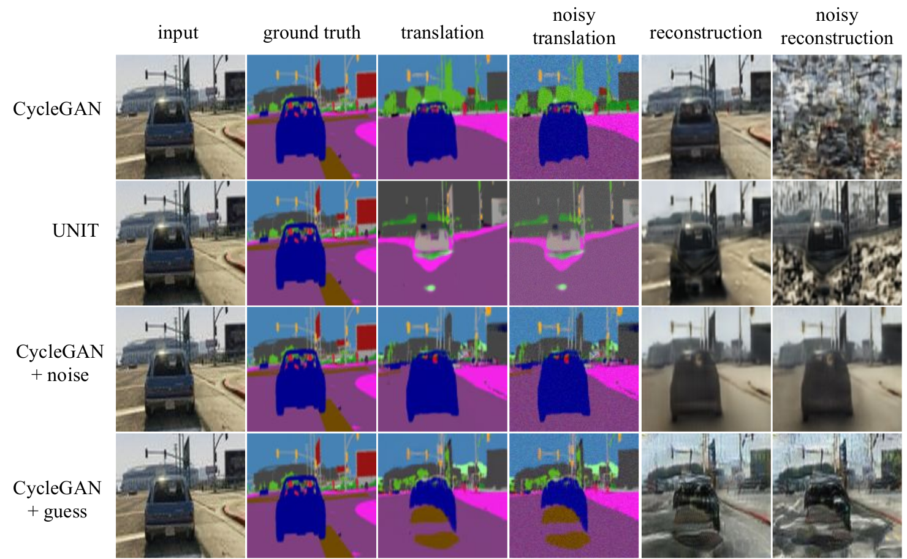

Adversarial Self-Defense for Cycle-Consistent GANs
NeurIPS'19
Abstract
The goal of unsupervised image-to-image translation is to map images from one domain to another without the ground truth correspondence between the two domains. State-of-art methods learn the correspondence using large numbers of unpaired examples from both domains and are based on generative adversarial networks. In order to preserve the semantics of the input image, the adversarial objective is usually combined with a cycle-consistency loss that penalizes incorrect reconstruction of the input image from the translated one. However, if the target mapping is many-to-one, e.g. aerial photos to maps, such a restriction forces the generator to hide information in low-amplitude structured noise that is undetectable by human eye or by the discriminator. In this paper, we show how such self-attacking behavior of unsupervised translation methods affects their performance and provide two defense techniques . We perform a quantitative evaluation of the proposed techniques and show that making the translation model more robust to the self-adversarial attack increases its generation quality and reconstruction reliability and makes the model less sensitive to low-amplitude perturbations.
Overview
Cycle-consistency property forces model to hide the information about the input image by adding low-amplitude structured noise to the translation. Ideally, if the reconstruction is "honest" and relies solely on the visual features of the input, the reconstruction quality should not be greater than that of the translation. The results of all three translation methods (CycleGAN, UNIT and MUNIT) show that the reconstruction is almost perfect regardless of the translation accuracy. Furthermore, the reconstruction of the input image is highly sensitive to low-amplitude random noise added to the translation. We propose two defense techniques against the self-adversarial attack that make models both more "honest" in terms of reconstruction and less susceptible to random noise.
